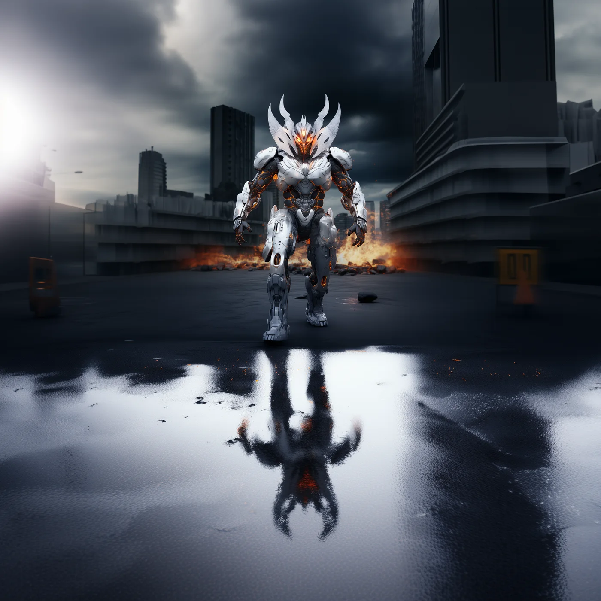
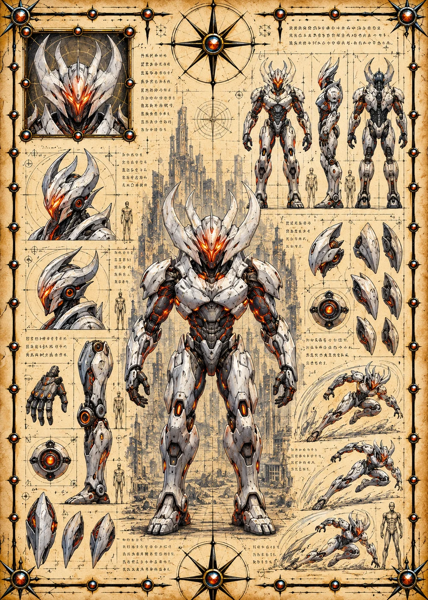

©
©
GENEZYS ARCHIVE · Earth 2 · Synthbot
Ukon
Silk Caster

Archive record
Ukon spins threads no eye can see. Once the Cosmos Spiral settles over a battlefield, wounds refuse to close and energy bleeds away, round after round. Of all who signed the Accord, only Ukon's pilot seems patient. The web does the rest.
Combat signature
Cosmos Spiral
110 Cosmara
360 Animus
310 Vitalis
Spins threads through universal fabric: Enemies cannot be healed for 3 rounds and lose 40 Cosmara each round for 3 rounds.
Genezys 02:07 ™&©2026LEGIONS
